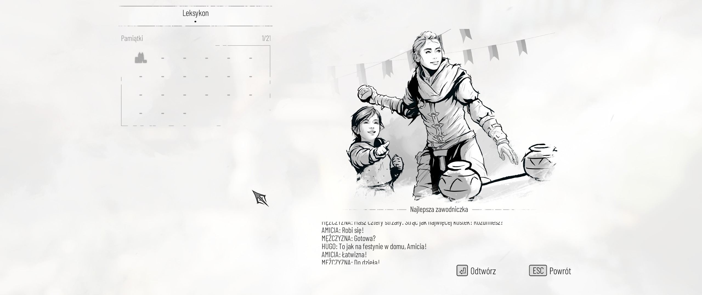
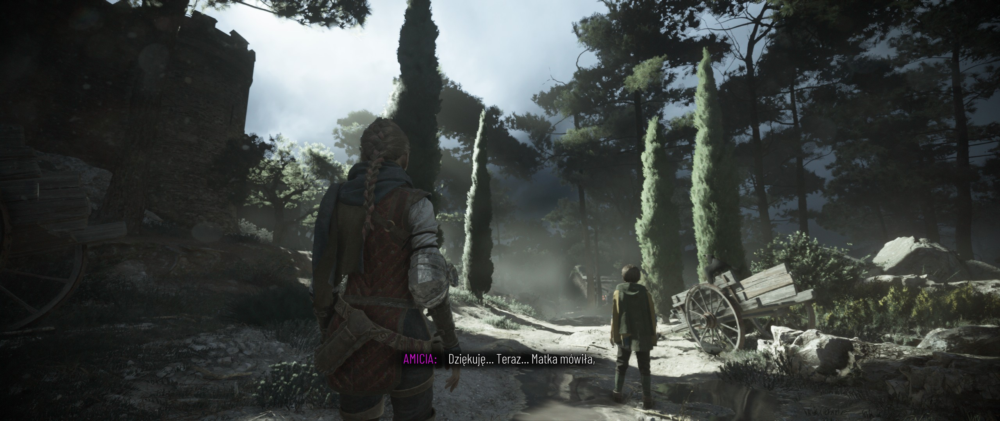
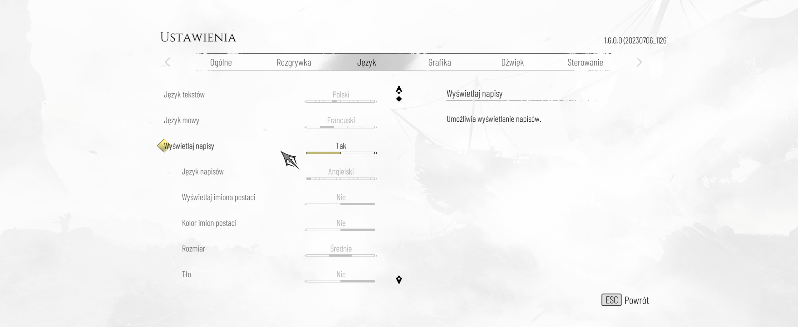

rozwinięcie jedynki w sposób bardziej różnorodny i zrównoważony; dość długie opowiadanie (17 rozdziałów) chce na wiele sposobów przedstawiać obraz skrajnych emocji, lecz przede wszystkim skomplikowanej miłości; wszystko to poprzecinane jest całkiem ładnymi widoczkami i opcjonalnymi znajdźkami; klasyczny schemat wstęp–rozwinięcie–zakończenie prowadzi do iście klasycznego zakończenia (zdradzanego przez podtytuł gry); niewątpliwie udało się tu pokazać poruszającą historię rodzeństwa, aczkolwiek co za dużo to niezdrowo (zbyt wiele agresji pod rząd wywołuje jedynie zobojętnienie; niemniej, wykonano to w tej grze całkiem zmyślnie;
requiem oferuje różnorodność nieprzejawioną w innocence; mamy tutaj m.in.:
sekwencje, gdy nie można mordować ludzików,
używanie szczurów na bardziej otwartym terenie,
walki z bossami,
unikanie bossa, tj. sokoła, co to sunie, kwili, dziobie,
różnych towarzyszy o różnych umiejętnościach (brutalna siła arnauda, pryzmat sophie, stupefacio lucasa),
powóz w stylu wieżyczki z minigunem (greckim ogniem) pod koniec gry,
co jakiś czas uciekanie przed falami szczurów z kamerą skierowaną frontalnie,
znajdźki (leksykon) w postaci kwiatów (herbarium), a później pióra ptaków, a do tego wspomnienia (pamiątki),
noże, którymi można mordować albo otwierać sekretne skrzynie,
stół warsztatowy i ulepszanie sprzętu tylko w wybranych momentach,
umiejętności zdobywane pasywnie przez styl rozgrywki (agresja, oportunizm, roztropność),
szczury po jakimś czasie pojawiające się przy zwłokach, również tych spalonych.

leksykon z pamiątkamiumiejętności: lekki krokulepszenie: narzędzia podróżnewydawanie poleceń towarzyszom: lucas trzyma korbę podnoszącą kładkę
początkowo pokazuje się graczowi krajobrazy i folklor pełen kolorytu, w szczególności początkowe czerwone miasto i późniejszą wyspę la cunę
czerwone miastowieża vaudina w czerwonym mieścieponura dżdżysta noc w czerwonym mieście

za murami miasta podczas burzywidok na inną część miasta z basztyw drodze do kamieniołomówwyspa la cunaikoniczna góra na la cuniehugo we śniewybrzeże w drodze do statku „la rascasse” („szumowiny”)
gdy wydaje się, że nie można już więcej nic pokazać ze szczurami, to gra przedstawia nam mgławicę, efekt ostatniego stadium maculi u nosiciela zarazy;
mgławica w gnieździe szczurówmgławica szczurów w szmaragdowej poświacie
ostatecznie, używać trzeba dość dużo ognia, a episanguinis do wabienia jest rzadkim surowcem;
efekt rzucenia dzbana z igniferem
kusza, po zdobyciu umiejętności odzyskiwania bełtów z ciał zabitych, jest najskuteczniejszą bronią, przyćmiewającą inne; chyba, że chce się walczyć na rympał z całym oddziałem niemilców;
ulepszenie: wzmocnione bełty
# opowiadanie
jest coś pociesznego w relacji między amicią a hugo; w każdym razie istnieje dobry powód dlaczego telenowele są długie – bo przedstawienie relacji emocjonalnej wymaga przestrzeni gwoli ukazania subtelności;
poza budowaniem emocjonalnej przemiany, amicia chce odpocząć ale nie może; nagromadzony gniew, rozpacz i frustracja co jakiś czas przejawiają się w postaci ekstremalnej agresji z jej strony jako odpowiedź na przeciążenie; w zasadzie jest to realistyczne, lecz co za dużo to niezdrowo (na przeciążenie fizyczno-umysłowo-emocjonalne mężczyźni reagują zobojętnieniem, a kobiety najczęściej chcą wszystkich pozabijać);
istnieją też krótkie momenty, gdy akurat inni ludzie nie próbują nas zabić;
powóz, zawiązanie fabularne
ogółem opowiadanie ma rozum i godność człowieka, tj. intencje i motywacje postaci wydają się sensowne, chociaż pod koniec gry zmierza to nieco w stronę obsesyjnego fanatyzmu; jakąż farsą jest ten ostatni wątek: wszystko podąża absurdalną ścieżką;
zakończenie jest iście epickie i widowiskowe; jednocześnie smutne, co zdradza tytuł gry – requiem to katolicki utwór żałobny wykonywany pierwotnie na pogrzebach;
poza specyficzną i trudną miłością rodzeństwa postarano się o subtelną miłość przyjacielską; kompozytor potwierdził, że lucas kocha amicię;
podsumowanie rozdziału
# artyzm a kłopoty technicze
widoki w grze potrafią być naprawdę malownicze; przy czym, czasem wydawało mi się to nieco zbyt jasne w dzień;
zwraca również uwagę, przynajmniej na początku gry, ładny warkocz amicii;
specyficzne wrażenia graficzne mogą być powodowane przez takie zabiegi jak: filmowe ziarno, winieta, brud na obiektywie, rozmycie w ruchu; nie bez powodu powstały mody typu reshade do tej gry;
jednocześnie, potrafi sobie pościnać ta gra w bardziej wymagających graficznie miejscach; doskwierało to zwłaszcza przy wielkim ogniu, wielkim ognisku przy nabrzeżu; częściowo spowodowane jest to kłopotami z dlss i śledzeniem promieni;
ray tracing wydaje się wpływać tajemniczo na ilość błędów niepozwalających kontynuować do następnego etapu; pomaga jego wyłączenie albo restart punktu kontrolnego czy rozdziału;
w sceneriach widzianych tu i ówdzie można docenić cieniowanie;
droga w stronę arenypochodnia, szczury i oświetlenieprzemykanie wąskimi kładkaminocny widok na latarnięna brzegu z rozbitym „la rascasse”
# uwagi ogólne
po pierwszym uruchomieniu gra straszy zbieraniem danych osobowych, a kanoniczny dubbing francuski trzeba sobie ustawić samodzielnie;
telemetria

ustawienia języka
to jedna z tych gier mających irytujący styl kolekcjonowania: gdy fabuła prowadzi na ścieżkę po prawo, a pominie się tę po lewo, gdzie umiejscowiono znajdźki, to potem trzeba wczytywać ponownie od punktu kontrolnego, bo nie można się już cofnąć;
w istocie, przez jakiś czas uświadczymy wystarczająco wiele zamykania za sobą stalowych drzwi na rygiel – oznakę tego, że przeszliśmy do następnej sekcji lokacji;
co więcej, czasem krzaki są przekraczalne a czasem nie; to zależy od tego, czy mają one stanowić iluzję naturalnej bariery;
pojawiają się okazjonalnie zwierzęta; taka pani gęś potrafi jedynie gęgać i od nas uciekać; kozy zaś po prostu stoją w miejscu;
pan świniagroteska, brud i makabra w domu rzeźnika
sterowanie zostało pomyślane wybitnie pod pada: kręcić korbą przy statycznej kamerze trzeba wsad-em po okręgu, kierunkowo względem wzroku postaci;
logika niektórych zagadek bywa kłopotliwa; dotyczy to przede wszystkim tych momentów, gdy trzeba podpalić trawę, by odsłonić przejście; jest to lekko konfundujące, jako że gra tego nie uczy, ani nijak do tego nie zachęca;
na la cunie można natknąć się na opuszczoną kryjówkę przemytników, gdzie czeka unikalna nagroda (zagadka z wiatrakami);
gra posiada poziomy trudności, lecz nie wiadomo po co; nie są one brane pod uwagę co do osiągnięć, tak jak większość gier to czyni; wyłącza to podpowiadanie po pewnym czasie, co jest akurat tutaj miłym dodatkiem, jako że nie jest nachalne, a wydaje się być naturalne;
“There are two major differences that separate it from Narrative and Normal. Firstly, the help frequency takes the longest, leaving players to their own devices to figure out how to progress when they are stuck, and the user interface does not provide any indicators or icons notifying players of enemy awareness, requiring true mastery of A Plague Tale: Requiem’s gameplay mechanics in order to survive.”
w ramach sekcji lokacji pojawia się około dziesięciu przeciwników; agresja oznacza zabicie ich wszystkich lub prawie wszystkich; roztropność polega na skradaniu się i wyminięciu większości z nich; oportunizm zatem to wybicie połowy;
gra jest skonstruowana w taki sposób, że bardzo wyraźnie pokazuje dalszą drogę, prowadzącą do postępów fabularnych, obok umieszczając miejsca opcjonalne; do tego, nie można powrócić do poprzednich sekcji, bo drzwi się za nami zamykają albo coś innego;
sekretne skrzynie to te, które po użyciu noża rozkładają się do warsztatu; uzyskanie osiągnięcia „explorer” wymaga otworzenia ich wszystkich używając jednego zapisu gry; przy każdej z nich gdzieś w pobliżu znajduje się nóż; — “All chest must be collected on the same save”
successfully complete all throws in the crowns game
strącanie szyszek sosny dotyczy zabawy z hugo na samym początku gry; z kolei jedyny kłopot z zabawą w rzucanie przez korony z kwiatów na la cunie leży w mylącej trajektorii, jaką podpowiada gra;
interact with all the old protector's items in the sanctuary
mercy
don't kill the guard on the docks
w sanktuarium aelii i basiliusa łatwo pominąć zwój obok wyłomu w ścianie pełniącym rolę okna; obiektów do wejścia w interakcję jest 16, po 4 na pomieszczenie;
aby darować życie żołnierzowi w dokach należy rzucić w jego pochodnię smołą, co ogłuszy go na tę chwilę potrzebną do przedostania się za następne stalowe drzwi;
# https://www.pcgamingwiki.com/wiki/A_Plague_Tale:_Requiem<SteamLibrary>/steamapps/compatdata/1182900/pfx/ → <Steam>\userdata\1182900\<UserId>\remote<SteamLibrary>/steamapps/compatdata/1182900/pfx/ → %AppData%\A Plague Tale Requiem\ENGINESETTINGS
zapis stanu gry:
7z a -ttar \~/library/roboczy/"a plague tale requiem.tar" \"/run/media/$USER/games/SteamLibrary/steamapps/compatdata/1182900/pfx/drive_c/users/steamuser/AppData/Roaming/A Plague Tale Requiem" \~/.steam/root/userdata/<UserId>/1182900/remote